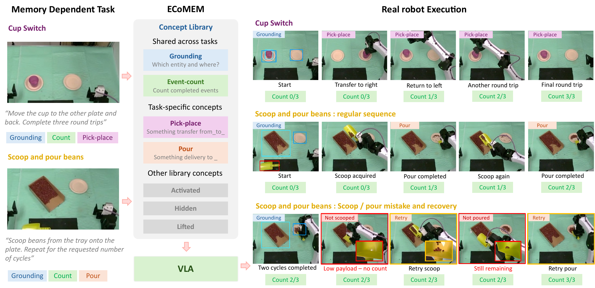
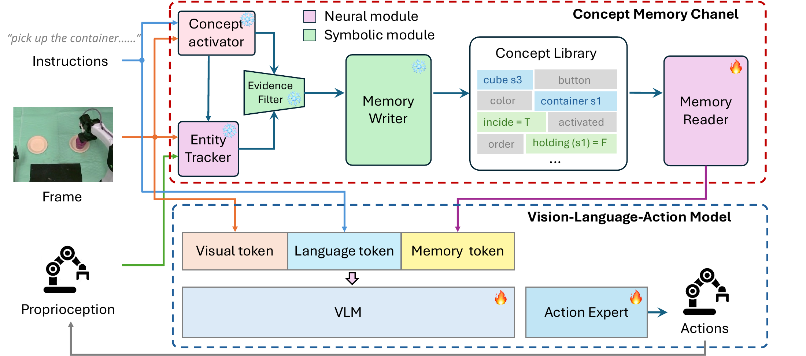
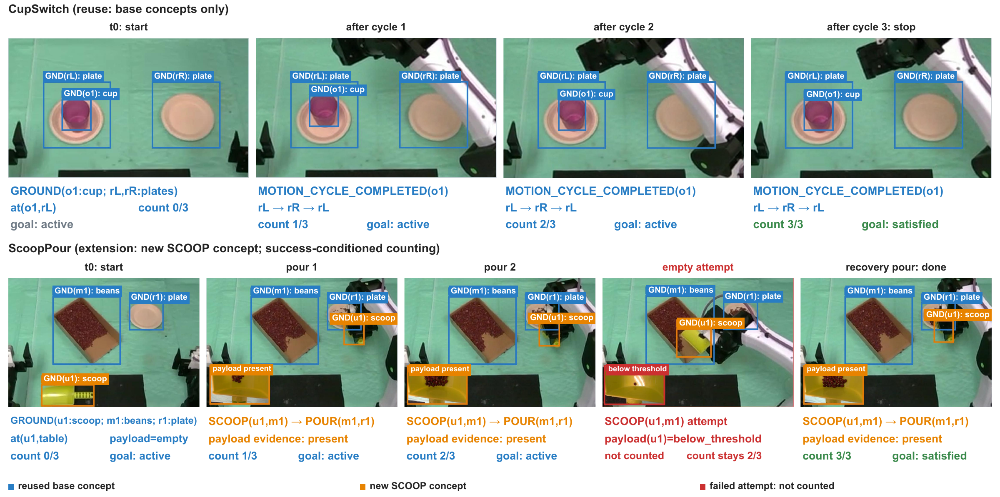

Abstract
A robot may lose sight of an object it must later retrieve, need to recall what a person demonstrated earlier, or track which steps of a task it has already completed. Current vision–language–action (VLA) policies often fail once the information needed for action disappears from the current observation, making memory critical for long-horizon robot behavior. Existing approaches typically provide longer histories or learn implicit memory from observation–action trajectories. But action supervision tells a policy how to act, not what to remember: it does not specify which past facts should persist or how they should change as new evidence arrives.
We therefore separate maintaining an evidence-grounded account of the past from learning how to act on it. This insight motivates Explicit Concept Memory (ECoMEM), which represents task-relevant history with a reusable library of grounded concepts. An evidence-based Writer selects and updates these records, while a learned Reader turns them into memory tokens that directly condition the VLA. Across 16 RoboMME tasks, ECoMEM leads the evaluated robot policies on 15 tasks. On two new real-robot tasks, the same memory library either transfers directly or requires only one new concept, achieving 86.1% success versus 8.6% for a no-memory VLA.
Explicit Concept Memory
An evidence-based Writer maintains the facts.
A learned Reader makes them useful for action.

Write from evidence. The instruction selects relevant concepts and specifies which entities to ground. Recognizers combine visual and robot-state evidence; explicit update rules preserve facts through occlusion, record each event once, and update counts and ordered progress.
Read for action. A small Transformer encodes structured records into memory tokens. These tokens join the image and language tokens of π0.5; the Reader and policy learn how to use them through action supervision.
A shared library, four kinds of memory
- Entity & Spatial Grounding
- What is the entity, and where is it?
- State & Relation
- What state is it in, and how is it related to other entities?
- Event & Progress
- What has happened, and how much of the goal is complete?
- Temporal & Procedure
- In what order did events occur, and what comes next?
Memory-Dependent Robot Control
82.42% average success across 16 RoboMME tasks.
ECoMEM leads the evaluated robot policies on 15 of 16 tasks, spanning counting, object permanence, reference, and imitation. Its task-equal mean is 37.91 percentage points above the strongest evaluated baseline.
| Method | Success |
|---|---|
| π0.5 | 17.93% |
| π0.5 with past actions | 19.73% |
| SAM2Act+ | 21.37% |
| MemER | 42.38% |
| FrameSamp+Modul | 44.51% |
| ECoMEM | 82.42% |
| Human reference | 90.50% |
ECoMEM is evaluated on 50 episodes per task with three policy sampling seeds. Baseline and human results are reported by RoboMME.
What makes the memory useful?
Controlled ablations show that spatial information, event progress, and temporal order support distinct memory-dependent decisions. Task-conditioned concept selection improves control and reduces recognition cost; language grounding binds remembered facts to the correct entities.
Real-Robot Transfer
Reuse the library for CupSwitch. Add one concept for ScoopPour.
CupSwitch uses existing grounding, pick–place, counting, and goal concepts to complete a requested number of cup round trips between two plates. ScoopPour adds SCOOP(tool, material), verifying that the lifted scooper carries beans. This new concept composes with the existing memory machinery so empty attempts do not advance the count.

| Task | Target | ECoMEM | No-memory π0.5 |
|---|---|---|---|
| ScoopPour | 1× | 16 / 20 | 4 / 12 |
| ScoopPour | 2× | 19 / 23 | 0 / 12 |
| ScoopPour | 3× | 11 / 12 | 0 / 11 |
| CupSwitch | 2× | 11 / 12 | 0 / 12 |
| CupSwitch | 3× | 11 / 12 | 1 / 11 |
| Pooled success | 86.1% (68/79) | 8.6% (5/58) | |
Both methods are fine-tuned from pretrained π0.5 on the same teleoperated demonstrations. Trials are unpaired, with unequal sample sizes. A ScoopPour cycle is a successful scoop-and-pour; a CupSwitch cycle is one full round trip.
BibTeX
@misc{liu2026ecomem,
title = {ECoMEM: Explicit Concept Memory for
Memory-Dependent Robot Control},
author = {Liu, Yize and Wang, Ke and Schwager, Mac
and Xu, Yiqing and Wu, Jiajun},
year = {2026},
url = {https://ecomem.github.io/}
}